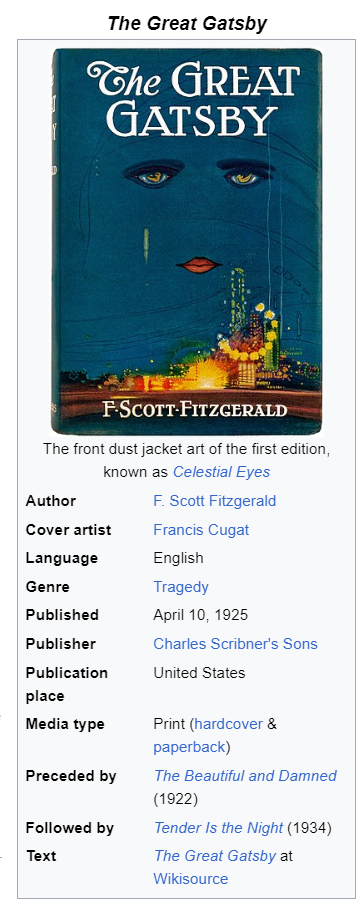

The Great Gatsby
Published by F. Scott Fitzgerald, published in 1925
Genres: Tragedy
Cover artist Francis Cugat
Published April 10, 1925
Publisher: Charles Scribner's Sons
I recently finished rereading "The Great Gatsby," and as always, it left me feeling a little bit heartbroken, a little bit hopeful, and a whole lot contemplative. It's a book that stays with you long after you've turned the last page, and I think that's because it speaks to something fundamental about the human experience.
- Sure, the story is set in the roaring twenties, a time of excess and glamour, but the themes Fitzgerald explores are timeless. The pursuit of the American Dream, the allure of wealth and status, the complexities of love and loss – these are all things we grapple with today, just as much as they did in the 1920s.
- What struck me most this time around was the way Fitzgerald captures the illusion of the American Dream. Gatsby, with his lavish parties and extravagant lifestyle, seems to have it all. But beneath the surface, there's a deep yearning for something he can never truly attain – the past, a love lost, a sense of belonging.
- The novel also offers a powerful critique of the class system. Gatsby's wealth, though self-made, can't buy him acceptance into the exclusive world of the Buchanans. He's forever an outsider, a "new money" interloper in a world ruled by "old money" traditions.
- And then there's Daisy, the object of Gatsby's affections. She's a beautiful, enigmatic figure, but ultimately trapped by the expectations of her time. She embodies the flapper ideal, but her choices are limited by the societal constraints placed upon women.
- "The Great Gatsby" is a book that challenges us to look beyond the surface, to question the things we value, and to consider the true cost of chasing dreams. It reminds us that even in a world of glittering parties and extravagant wealth, there's a deep longing for connection, authenticity, and a sense of belonging that money can't buy.
- The green light at the end of Daisy's dock, a symbol of Gatsby's unattainable dream, still beckons. It's a reminder that the pursuit of happiness is often a complex and elusive journey, and that sometimes, the things we think we want aren't what we truly need.
